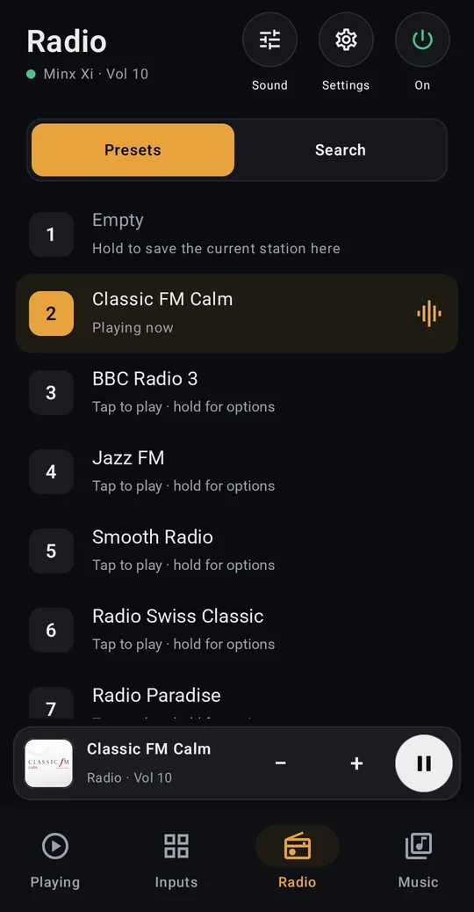
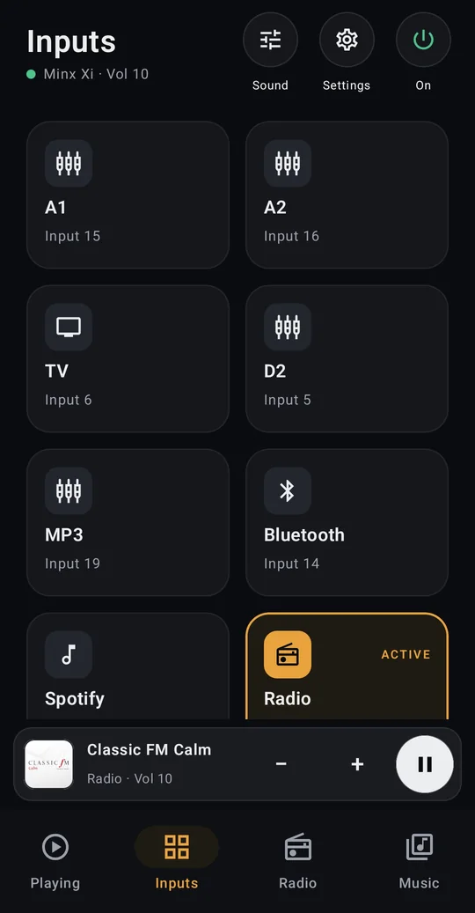
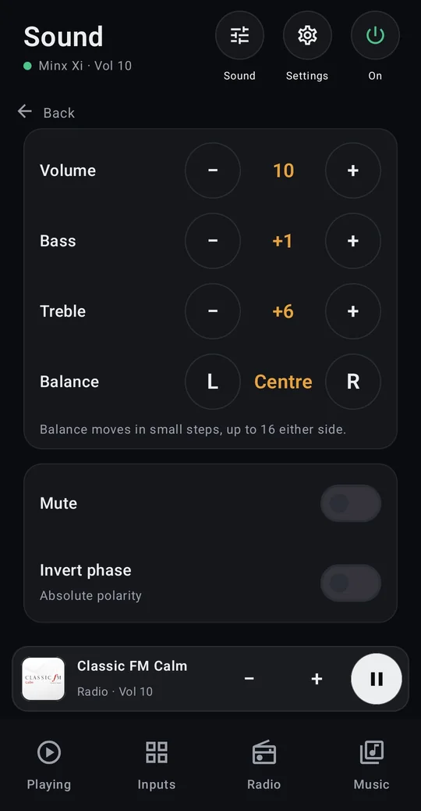
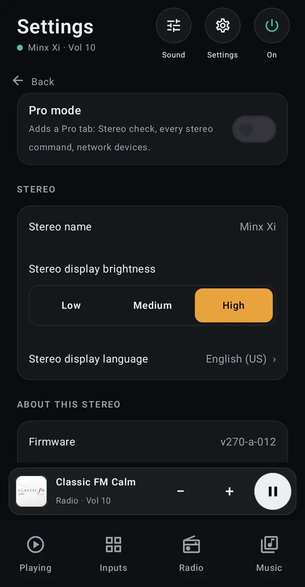

“I love my Minx Xi. When its app stopped working on my new phone, I built my own so I could stay connected. Now you can too.” – Eyal, Minx Xi owner and the person behind this app
A free Cambridge Connect alternative
Stay connected to your stereo.
A free Android remote for legacy Cambridge Audio streamers: Minx Xi, NP30 and Stream Magic 6. Works on old and new Android phones, both 32‑bit and 64‑bit.
Sorry, there's no iPhone version.
Free, open source, no ads, no tracking, Android 8 or newer, unofficial, not made by or affiliated with Cambridge Audio.
What it does
Full control of your stereo.
Minx XiNP30Stream Magic 6 (v1)
Other stereos may work too.
A real volume knob
Turn it with your thumb. Your phone's side volume buttons work too, even when the screen is locked.
Every input, one tap
Internet radio, Spotify, TV, Bluetooth and the rest, using your stereo's own input names.
Radio presets & search
All your preset stations. Search by name, country or genre, and save a find to any preset slot.
Sound the way you like it
Bass, treble, balance, mute and phase, with one tap to reset.
Lock screen & widget
Play, pause and see what's on from the lock screen, or add the home-screen widget.
Private by design
It talks only to your stereo on your home Wi-Fi. No accounts, no ads, no tracking. The code is open for anyone to check.
Stereo settings
See your stereo's name, firmware and details, and set its display brightness and language.
Easy preset switching
Swipe the station card, or press next and back, to step through your radio presets. The new name shows straight away.
A look inside
Dark, calm and easy to use.




Real screenshots from the app on a Minx Xi.
Install
Up and running in a minute.
- Download the app on your Android phone.
Tap here to download. It's a small file (about 2 MB). - Open the downloaded file.
If Android asks, allow your browser to “install unknown apps”. This is normal for apps that come from outside Google Play. - Make sure your phone and stereo are on the same Wi-Fi.
Switch the stereo on. The app finds it by itself. - Enjoy the music.
The app tells you when a new version is ready, and updates install over the old one.
Questions
Good to know
Which stereos does it work with?
It's made for legacy Cambridge Audio stereos that use the Cambridge Connect app (UPnP, Reciva platform): the Minx Xi, NP30 and Stream Magic 6 (v1). It's tested on a Minx Xi. Other models from the same family may work too.
Is it safe?
Yes. I use it every day on my own Android phone. The app talks only to your stereo on your own home network. It has no accounts, ads or tracking, and it never sends your data anywhere. Its full source code is public on GitHub, so anyone can check exactly what it does.
Is there an iPhone version?
Sorry, not at the moment. This is a free hobby project, and making an iPhone app means paying Apple a yearly developer fee, so for now it's Android only.
Why isn't it on Google Play?
It's a free hobby project, and for now it's published directly on GitHub. Android shows a one-time “install unknown apps” prompt for apps from outside Google Play. That's expected.
Does it work with Spotify and Bluetooth?
Yes. Spotify keeps working through the Spotify app as usual, and this app shows the track, album art and progress, and lets you pause or skip. Bluetooth audio plays as normal, and you control the stereo itself over Wi-Fi.
Is this an official Cambridge Audio app?
No. It's an independent, unofficial community project, not made by, endorsed by or affiliated with Cambridge Audio. Cambridge Audio, Minx, Stream Magic and Cambridge Connect are trademarks of their owner, used here only to describe compatibility.
Get in touch
Found a bug? Have an idea?
Reports and ideas go on GitHub, where everyone can see them and follow progress. You'll need a free GitHub account.
Reporting a bug? In the app, open Settings → Diagnostics, tap Create diagnostic report, then Share report, and attach the file to your bug report.
Enjoying the music?
Cambridge Connect Legacy is a hobby project, made for fun and out of a love of good sound, so that great stereos keep working long after their official apps stop. It's free, with no ads and no tracking. If it's made your listening a bit better and you'd like to say thanks, a small donation would mean a lot. Enjoy the music!
Buy me a coffee